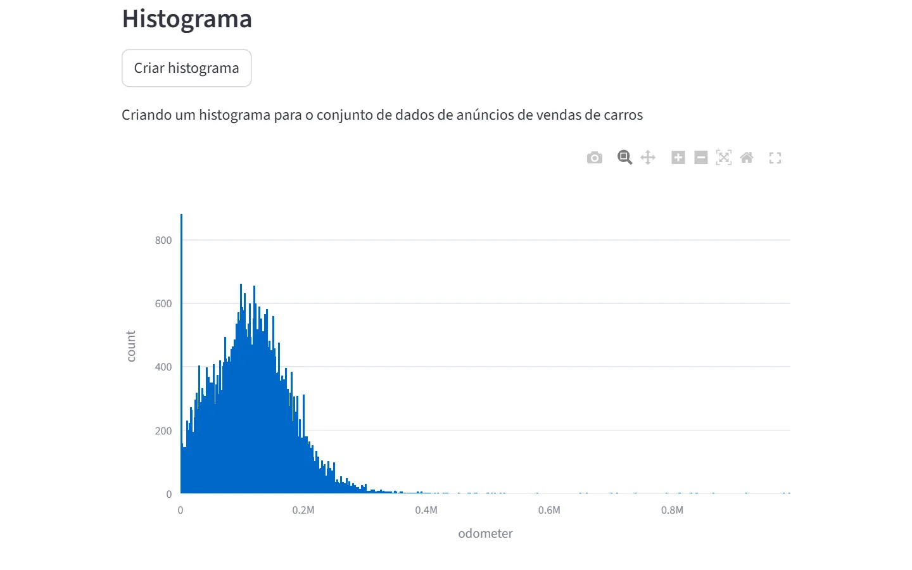
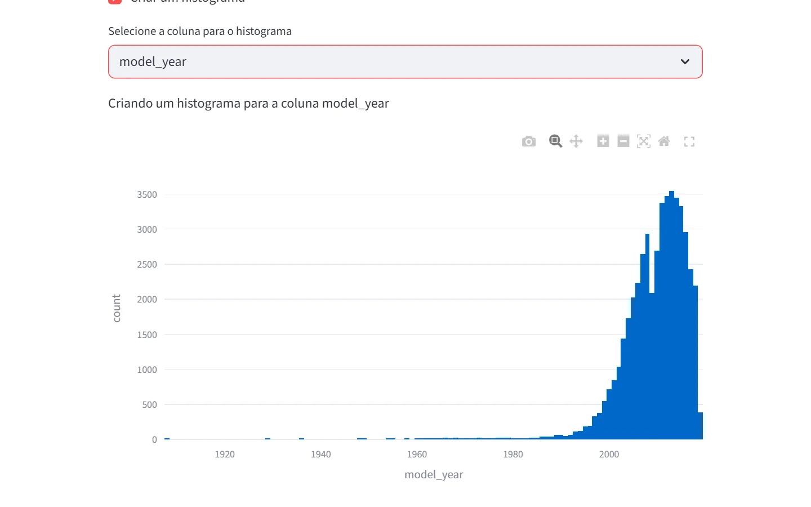
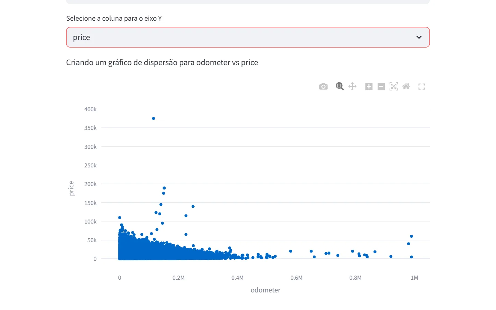

PortfólioModelos preditivos e estatística
Painel de anúncios de veículos
Aplicativo web para explorar uma base de 51.525 anúncios de carros usados nos Estados Unidos. A pessoa escolhe a coluna e o aplicativo desenha o histograma ou o gráfico de dispersão.
- Contexto
- Bootcamp de Ciência de Dados, TripleTen
- Dados
- 51.525 anúncios, 13 colunas, maio/2018 a abril/2019
- Aplicativo
- Streamlit publicado no Render
51.525anúncios de carros usados
13colunas: preço, ano, modelo, estado, quilometragem e outras
US$ 9.000preço mediano dos anúncios
3gráficos no aplicativo: 2 histogramas e 1 dispersão
Telas
Aplicativo do repositório rodado localmente, com a base pública do projeto.






Fluxo da tela
Entrada
Página única
Controles
Botãohistograma da quilometragem
Caixa 1histograma de qualquer coluna
Caixa 2dispersão entre duas colunas
Seleção
Coluna1 das 13
Eixo X e eixo Y2 das 13
Saída
Gráfico Plotlyzoom, filtro e download em PNG
Arquitetura
Dados
- Colunaspreço, ano do modelo, modelo, estado, cilindros, combustível, quilometragem, câmbio, tipo, cor, tração 4x4, data e dias no ar.
- PeríodoAnúncios publicados de 01/05/2018 a 19/04/2019.
- Ausentestração 4x4 em 25.953 linhas, cor em 9.267, quilometragem em 7.892, cilindros em 5.260 e ano em 3.619.
- TiposSUV (12.405), caminhonete truck (12.353) e sedã (12.154) somam 71,6% dos anúncios.
Preço mediano por estado do carro
Preço mediano em US$
Calculado sobre o vehicles_us.csv do repositório. Novo: 143 anúncios; excelente: 24.773.
Achados
0,59
correlação de Spearman entre preço e ano do modelo: carro mais novo, preço maior.
−0,48
correlação de Spearman entre preço e quilometragem.
0,00
correlação entre preço e dias no ar: o preço não muda o tempo do anúncio.
990.000
milhas é a maior quilometragem. Valores extremos pedem limpeza antes de modelar.
Limites
- ExploraçãoO aplicativo mostra a base sem limpeza. Valores ausentes e extremos entram nos gráficos.
- Sem modeloO projeto não estima preço. É uma etapa de análise e publicação.
- HospedagemO endereço no Render não respondeu na conferência de 16/11/2026.
Tecnologias
PythonpandasStreamlitPlotly ExpressRenderGit